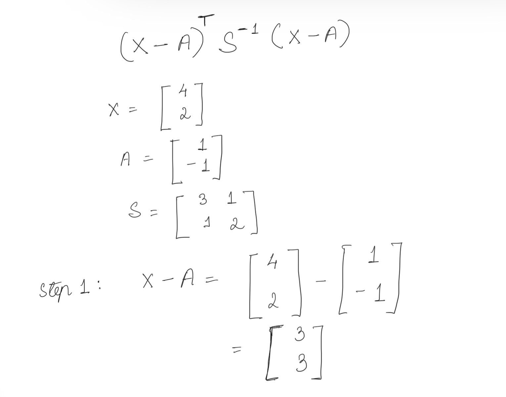
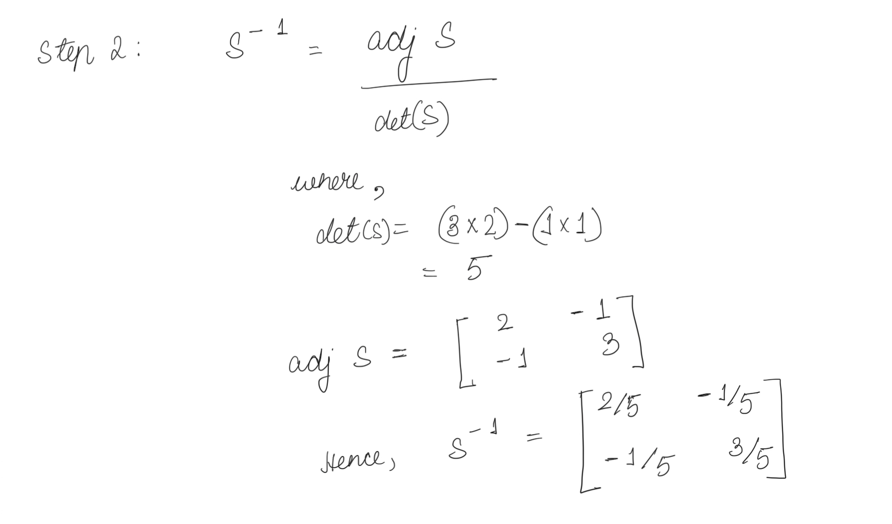
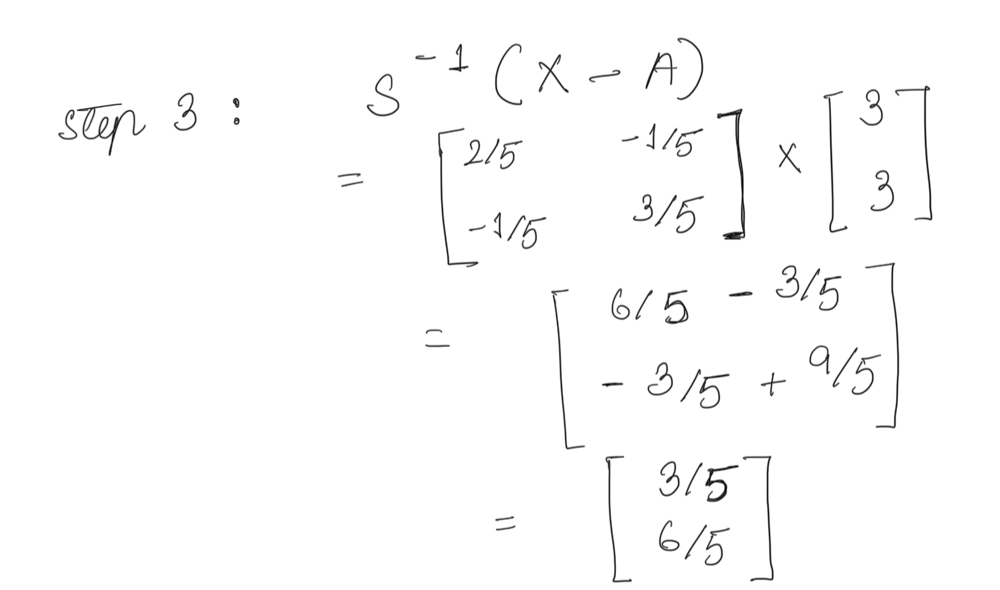
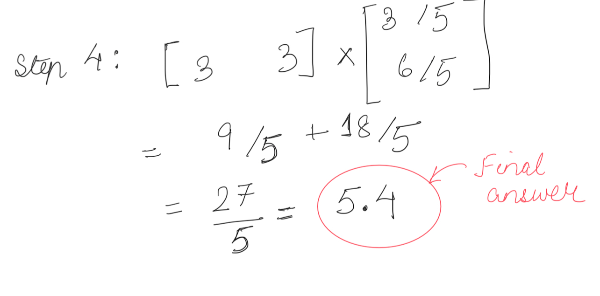
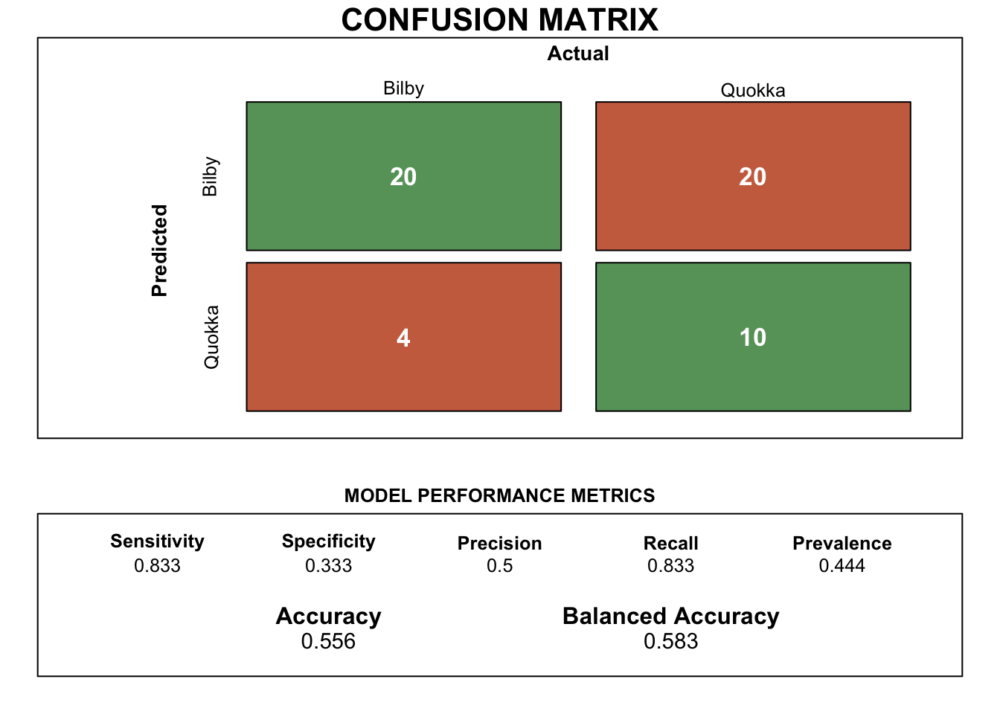
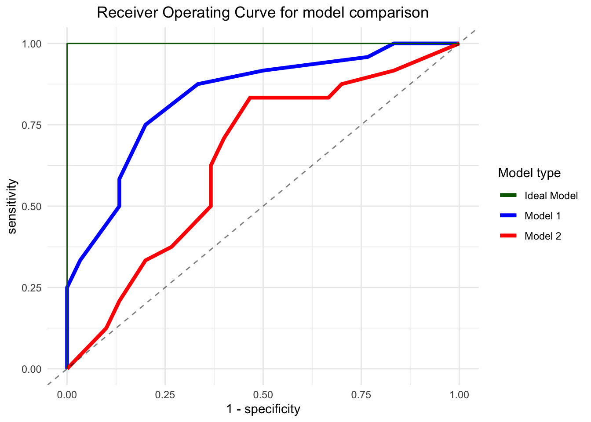
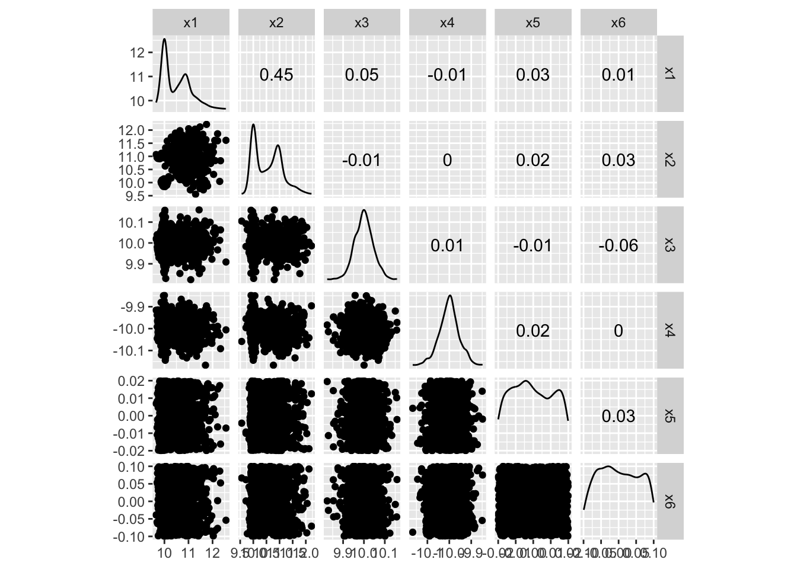
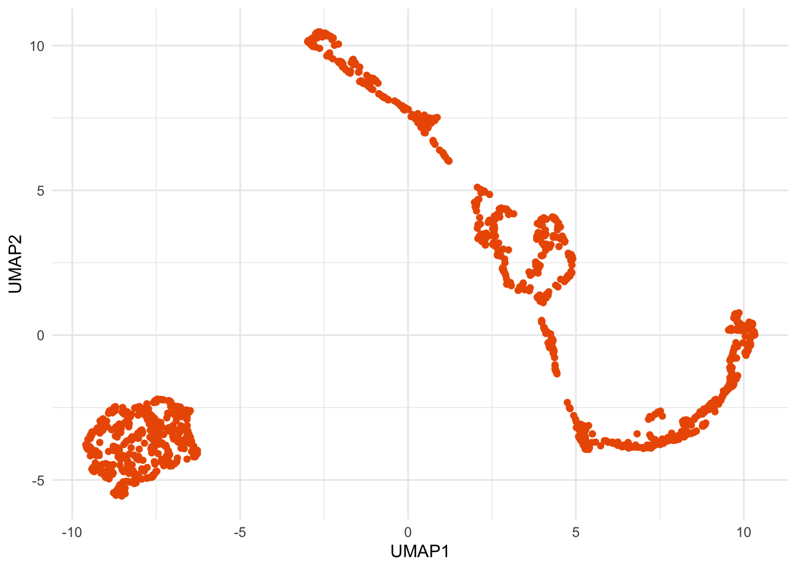
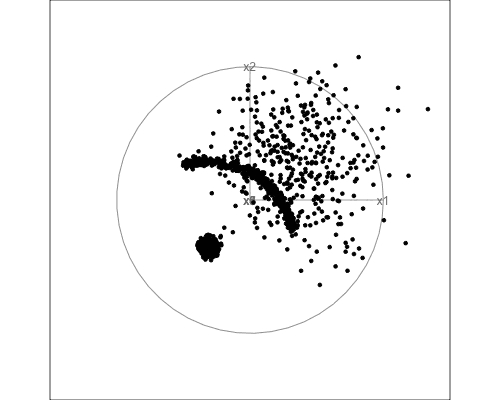
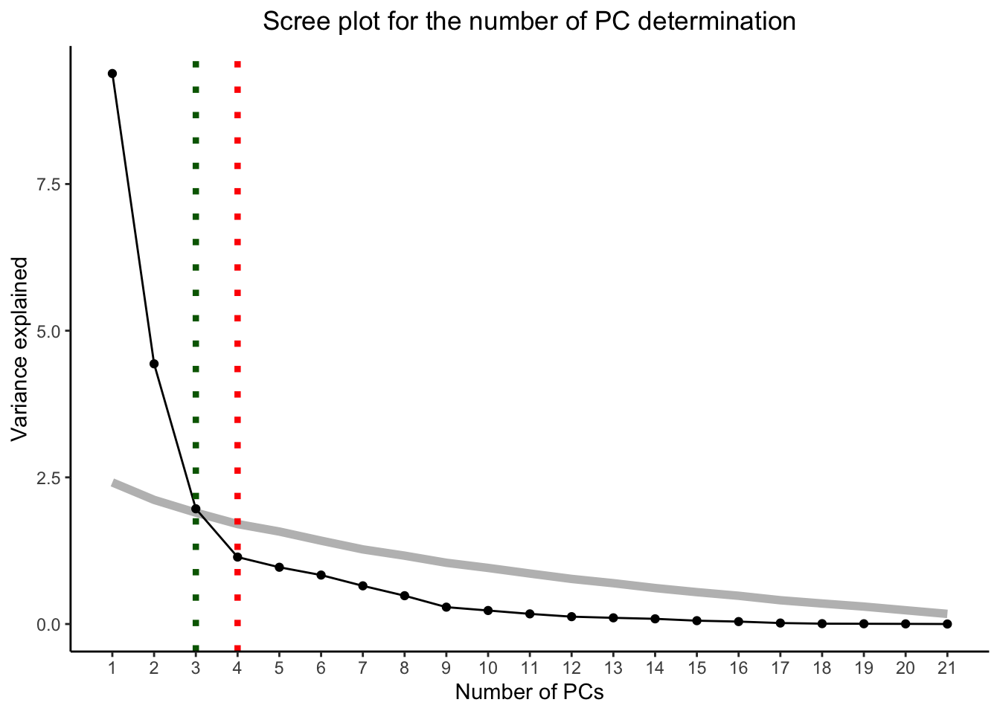

S <- rbind(c(3,1),c(1,2)) # 2 X 2 Matrix creation
X <- rbind(4,2) # 2 X 1 Matrix creation
A <- rbind(1,-1) # 2 X 1 Matrix creation
Matrix_calculation <- t(X-A) %*% solve(S) %*% (X-A) #Matrix multiplicationETC3250/5250 Assignment 1
1 Basic math and computing
1.1 Hand calculation
In order to perform the hand calculations so as to compute the expression \((X-A)^T S^{-1}(X-A)\), we perform the following steps:
- Step 1: We perform the matrix subtraction operation \((X-A)\) as it can be easily calculated. Matrix addition and multiplications are similar to regular operations. The corresponding element in each matrix will undergo the operation. Figure 1 illustrates this step.

- Step 2: In this step, we compute the value of \(S^{-1}\). An inverse of a matrix is calculated by the equation below:
\[\boxed{S^{-1} = \dfrac{adj(S)}{det(S)}}\]
Where, \(adj(S)\) is the adjoint of the matrix S and \(det(S)\) is the determinant of the matrix.
Figure 2 illustrates the steps to calculate the matrix inverse.

- Step 3: Once the inverse matrix has been calculated, we perform the matrix multiplication between \(S^{-1}\) and \((X-A)\). Figure 3 illustrates the calculated value after the calculation of the matrix product.

- Step 4: In the final step, we perform the second set of matrix multiplication by calculating the product between the obtained matrix in step 3 with the transverse matrix \((X-A)^T\). Figure 4 illustrates this final step with an obtained final result of 5.4.

1.2 Matrix calculation on R
The matrix calculation for computing \((X-A)^T S^{-1}(X-A)\) yields the result 5.4.
2 ML concepts
2.1 a) Model accuracy
| y | pred1 | pred2 | bilby1 | bilby2 | quokka1 | quokka2 |
|---|---|---|---|---|---|---|
| bilby | bilby | bilby | 0.8 | 0.80 | 0.2 | 0.20 |
| bilby | bilby | bilby | 0.9 | 0.51 | 0.1 | 0.49 |
| bilby | bilby | bilby | 0.9 | 0.60 | 0.1 | 0.40 |
The computations to assess the model metrics are delineated in the panel tabsets below.
The accuracy for model 1 which is calculated based on the number of true positives and the true negatives is observed to be 0.778.
However, the accuracy parameter for a model may not always be the best indicator. This is especially true when the data may contain unbalanced class distribution. In this case, we will rely on balanced accuracy which is based on the true positive and the true negative rate of prediction for the model.
The balanced accuracy for model 1 is found to be 0.775.
Figure 5 illustrates the detailed confusion matrix for model 1 with the critical model parameters which are useful indicators of model performance.
The accuracy for model 2 which is calculated based on the number of true positives and the true negatives is observed to be 0.63. The balanced accuracy for the same model which is based on the true positive and the true negative rates are 0.629.
Figure 6 illustrates the detailed confusion matrix for model 2.
2.2 b) Sensitivity and Specificity with revised threshold values
1) When the threshold value for classification in model 1 is 0.3
The sensitivity for model 1 when the threshold value for positive Bilby classification is 0.3 and above is 0.958. The value for 1-Specificity for the same model which is based on the true positive and the true negative rates is 0.767.
2) When the threshold value for classification in model 2 is 0.3

The sensitivity for model 2 when the threshold value for positive Bilby classification is 0.3 and above is 0.833. The value for 1-Specificity for the same model which is based on the true positive and the true negative rates is 0.667. Other detailed model performance metrics for model 2 with a threshold value of 0.3 can be referred to in Figure 8.
1) When the threshold value for classification in model 1 is 0.4
The sensitivity for model 1 when the threshold value for positive Bilby classification is 0.4 and above is 0.917. The value for 1-Specificity for the same model which is based on the true positive and the true negative rates is 0.5. Other detailed model performance metrics for model 1 with a threshold value of 0.4 can be referred to in Figure 9.
2) When the threshold value for classification in model 2 is 0.4
The sensitivity for model 2 when the threshold value for positive Bilby classification is 0.4 and above is 0.833. The value for 1-Specificity for the same model which is based on the true positive and the true negative rates is 0.467. Other detailed model performance metrics for model 2 with a threshold value of 0.4 can be referred to in Figure 10.
2.3 c) Receiver Operative Curve (ROC) visualisation for model output

Key takeaway
As we can observe from Figure 11, the area under the curve (AUC) covered by the ROC of model 1 is larger when in comparison to model 2. This indicates that the model 1 is performing better than the results obtained through model 2.
The higher the curve is to the top left point of the plot, the higher the true positive rate of the model (measured through sensitivity) as well as the least false positive rate (measured through 1-specificity).
We can additionally obtain a metric of the ROC by computing the area covered under each of these plotted curves. This is termed as the AUC and are as follows:
AUC for model 1 is 0.835.
AUC for model 2 is 0.645.
Based on the AUC values, we can clearly observe that model 1 performs better than model 2.
3 Visualisation
Here, we are required to visualise a high-dimensional data which contains 6 different variables. Due to the complexity of the data in hand and the multiple dimensions we are looking to study, it is often not possible to understand the correlation of each dimension through simple 2-dimensional plots such as scatter plots. Hence, we will be primarily studying the data through various high dimensional visualisation techniques, namely scatter plot matrix, UMAP and the grand tour.
3.1 a) 2D Scatter plot matrix

Key takeaway
Based on the scatter plot matrix as illustrated by Figure 12, it is difficult to ascertain any particular pattern when evaluating each of the pair of variables against one another. While there appears to be a very weak relationship between X1 and X2 owing to a correlation of 0.45, however, it is difficult to obtain any insight as the scatter points are randomly spread out on the 2D space. The remaining pair of variables show even weaker correlation, thereby indicating that each of the pair of variables are non-linearly related to one another.
3.2 b) Non-linear dimension reduction using UMAP
The uniform manifold approximation and projection (UMAP) compares the interpoint distances with what might be expected if the data was uniformly distributed in the high dimensional shapes.

Key takeaway
Based on the UMAP representation of the data on a 2D space upon reducing the dimensions into UMAP1 and UMAP2, we can observe that the data points have segregated into two regions of the plane, thereby creating two clusters.
In Figure 13, we observe that one of these clusters is easy to detect as most of the datapoints in this cluster are closely aggregated. However, for the other cluster, we can observe a wide variance in the data. This indicates that not all the points are as closely aggregated for the second cluster, making it less well defined. Additionally, the variance in the datapoints of the cluster could also indicate the presence of outliers which will need to be investigated further.
3.3 c) High-dimensional data visualisation using the grand tour
While we have already visualised the data on the 2D space by looking at the correlation among the variables, we now attempt to visualise the high-dimensional data in its true form by creating a tour which is an animation of the data points in the multi-dimensional space. The main advantage of this technique is that there is no information lost when drawing insights as we are effectively looking at all the data points in its original dimensions.

Key takeaway
While analysing the tour as illustrated by Figure 14, we can observe the presence of a particular cluster of points which are concentrated close to one another. This was previously detected in Figure 13 aswell.
In addition to the above finding, we can also observe that the points other than those in the identified cluster appear to be entirely on the plane generated by the axes X1 and X2 with high dispersion and variance.This information was not possible to obtain from Figure 13 due to its inherent functionality of reducing all the dimensions to two dimensions. Hence, the cluster on the top right of Figure 13 during the UMAP dimension reduction does not provide the complete information and needs to be investigated further through a high-dimensional tour.
The set of data points in the second cluster aggregate together to form a U-shaped group. However, the variance in these points are high and scattered across the plane. This indicates that while most points tend to group as the U-shaped cluster, there are multiple outliers to be considered too.
There also appears to be a particular orientation of the dimensions when the scatter points are linearly arranged. This was observed through a combination of the dimensions X3,X5 and X6.
4 Dimension reduction
In this exercise, we are required to analyse a dataset which contains multiple number of variables as illustrated by Table 2.
| Player | Start | End | Matches | Innings | NotOuts | Runs | HighScore | Average | BallsFaced | StrikeRate | Hundreds | Fifties | Ducks | Fours | Sixes | Overs | Maidens | Wickets | Economy | FourWickets | FiveWickets |
|---|---|---|---|---|---|---|---|---|---|---|---|---|---|---|---|---|---|---|---|---|---|
| MM Lanning | 2010 | 2023 | 132 | 121 | 28 | 3405 | 133 | 36.61290 | 2926 | 116.37047 | 2 | 15 | 1 | 405 | 47 | 6.0 | 0 | 4 | 6.500000 | 0 | 0 |
| AJ Healy | 2010 | 2024 | 153 | 135 | 21 | 2795 | 148 | 24.51754 | 2164 | 129.15896 | 1 | 16 | 12 | 372 | 54 | 0.0 | 0 | 0 | 0.000000 | 0 | 0 |
| BL Mooney | 2016 | 2024 | 95 | 89 | 22 | 2764 | 117 | 41.25373 | 2238 | 123.50313 | 2 | 22 | 4 | 362 | 16 | 0.0 | 0 | 0 | 0.000000 | 0 | 0 |
| EA Perry | 2008 | 2024 | 151 | 95 | 37 | 1841 | 75 | 31.74138 | 1585 | 116.15142 | 0 | 9 | 5 | 163 | 45 | 401.5 | 8 | 125 | 5.845707 | 4 | 0 |
| EJ Villani | 2009 | 2018 | 62 | 58 | 10 | 1369 | 90 | 28.52083 | 1158 | 118.22107 | 0 | 12 | 4 | 177 | 12 | 0.0 | 0 | 0 | 0.000000 | 0 | 0 |
| AJ Blackwell | 2005 | 2017 | 95 | 81 | 19 | 1314 | 61 | 21.19355 | 1414 | 92.92786 | 0 | 1 | 5 | 87 | 1 | 1.0 | 0 | 0 | 14.000000 | 0 | 0 |
In order to obtain insights from the data, we need to study the various variables in the current dataset. However, with the high number of variables present, it makes it extremely complicated to individually study each pair of variables.
In this exercise, we will apply a dimensionality reduction technique called the Principal Componenent Analysis (PCA). This technique is based on creating a linear combination of the variables such that the variance in the data is maximised, and are mutually uncorrelated.
4.1 Implementation of PCA in the current dataset
The chunk below provides the code required to compute the PCA for the current data.
cricket_pca <- prcomp(df_cricket[,2:dim(df_cricket)[2]],scale=TRUE)
Note
We scale the dataset as show in the above code chunk by setting the scale=TRUE parameter. This is done in order to account for the varying scales present in the full dataset and prevent the variables with larger scales to dominate the variance in the data. By bringing all the variables to a common scale, we are able to ensure that each variable is equally contributing to the PCA transformation.
4.1.1 a) Summary of the PCA
| PC1 | PC2 | PC3 | PC4 | PC5 | PC6 | PC7 | PC8 | PC9 | PC10 | PC11 | PC12 | PC13 | PC14 | PC15 | PC16 | PC17 | PC18 | PC19 | PC20 | PC21 | |
|---|---|---|---|---|---|---|---|---|---|---|---|---|---|---|---|---|---|---|---|---|---|
| Variance | 9.38 | 4.44 | 1.96 | 1.14 | 0.97 | 0.83 | 0.65 | 0.48 | 0.29 | 0.23 | 0.17 | 0.13 | 0.11 | 0.09 | 0.06 | 0.04 | 0.02 | 0.01 | 0 | 0 | 0 |
| Proportion | 0.45 | 0.21 | 0.09 | 0.05 | 0.05 | 0.04 | 0.03 | 0.02 | 0.01 | 0.01 | 0.01 | 0.01 | 0.01 | 0.00 | 0.00 | 0.00 | 0.00 | 0.00 | 0 | 0 | 0 |
| Cum. prop | 0.45 | 0.66 | 0.75 | 0.81 | 0.85 | 0.89 | 0.92 | 0.95 | 0.96 | 0.97 | 0.98 | 0.98 | 0.99 | 0.99 | 1.00 | 1.00 | 1.00 | 1.00 | 1 | 1 | 1 |
Table 3 provides a succinct summary of the variance of each principal component and the proportion of variance explained by that particular principal component (PC).
Key takeaway
Table 3 would allow us to obtain the ideal number of PCs which would capture the most amount of variance in the data, at the same time, being able to discard some of the PCs which do not contribute much to explain the variance. In this manner, we not only obtain the important PCs, but also reduce the overall complexity of the model by reducing the overall dimension of the data.
4.1.2 b) Biplot generation for PC1 and PC2
Figure 15 illustrates the biplot distribution for the first two PCs of the data.
Key takeaway
Based on Figure 15, some of the key observations are as follows:
We can observe that there are variables such as “wickets”,“four wickets” and “five wickets” which are pointing in the vertically downward direction and are also nearly parallel to one another. This indicates that these set of variables influence the PC2 variable strongly and are highly correlated to one another.
On the other hand, variables such as “Innings”,“Not outs”, “Strike rate”,“Sixes”,“Ducks”,“High score”,“Balls faced”,“Hundreds”,“Fifties etc, points towards approximately in the orthogonal direction to the set of variables mentioned in the previous bullet point. This means that these set of variables contribute towards the PC1 variable and are also correlated as they are observed to be pointing generally in a similar direction.
4.1.3 c) Choosing the appropriate number of PCs

The scree plot as illustrated by Figure 16 indicates the variance explained with the addition of each PC. Based on this plot and Table 3, we can clearly observe that the first 3 to 4 PCs are able to explain nearly 81% of variance in the data. An addition of the another PC is observed explain further variance, but to a lower degree.This indicates that adding more PCs isn’t necessarily explaining much variance in the data but making the model complex and difficult to interpret.
The guide line shaded in gray color is computed by performing PCA on 100 samples from a standard P-dimensional normal distribution. A deviation of the black line from the gray line indicates that the variance explained by the PCAs are indeed significant and need to be considered in our analysis.
Additionally, we observe that the PCAs from the 5th PCA and there on follow the guideline very closely. This indicates that the variance explained by these PCAs do not explain any significant variation of the data.
Key takeaway
Upon analysing the Scree plot, we can choose the first 3 or 4 PCs as our desired choice of PCs after successful dimensional reduction.
Usage of first 3 PCs would help us explain 75% of the variance but also make the model less complex than a model with 4 PCs.
Choosing the first 4 PCs would allow us to explain 81% of the variance at the cost of higher complexity.
Hence, the final choice of the number of PCs to be selected would depend on either if we want to prioritise low complexity in the model or prioritise the maximum variance to be explained.
While we have already studied the model using 2 PCs through Figure 15, we can additionally visualise the first 3 PCs using an interactive 3D scatter plot as shown in Figure 17
Key takeaway
Based on our analysis of the 3 PCs in Figure 17, we can observe that while most players cluster into one region as shown by the dark blue shaded points, there are however some outliers in the data which suggest that these players have better cricketing statistics in certain domains than the rest of the set of players.
These players are highlighted through the light colored data points in the plot and are analysed further in Section 4.1.5.
4.1.4 d) Interpretation of the PCs
The biplot which has been illustrated through Figure 15 allows us to understand the magnitude of contribution through the length of the loading vectors and the correlation among the variables by observing the angle made by each of the loading vectors to one another. Upon closely examining these loading vectors, we can obtain a few key interpretations of the PCs listed below.
Key takeaway
Based on the understanding of the cricketing terminologies, it can be inferred that PC2 is heavily influenced by the variables that relate to bowling in a game of cricket.
On the other hand, PC1 is primarily influenced by variables which relate to batting in the game.
There are variables such as “Start”,“Economy” and “Average” whose loading vector lengths are considerably smaller than the other variables. This indicates that the effect of these variables are much lower than some of the other variables mentioned in the plot.
There also appears to be lower correlation among each variable in the direction of PC1 as the loading directions of the variables (shown by the red arrows) are much more spread out than the case for variables in the PC2 direction. This additionally reinforces the fact that PC1 accounts for majority of the variance in the data (nearly 45 %).
4.1.5 e) Main patterns observed during PCA
Key takeaway
The distribution of data points as observed in the interactive illustration Figure 18 provides us with an understanding of the abilities of each player. Some of the key observations from the plot are as follows:
Majority of the data points cluster towards the top right of the plot, indicating the general abilities of the players lie in this region. Based on this, we can conclude that the PC1 and PC2 attributes of most players would list close to the origin point (0,0).
However, when observing the players on the X-axis (along the PC1 axis), we can observe that there are about three players to the left of the red line. These players are namely BL Mooney, MM Lanning and AJ Healy. As already explained in Section 4.1.5, a higher magnitude of value in PC1 relates to batting attributes. Based on the PC1 magnitude and the loading vectors of these players, this indicates that these players would generally feature as the top batters in the team.
When observing the players on the Y-axis (along the PC2 axis) and particularly at the points above the threshold red line, we observe the players M Schutt and JL Jonassen have a high PC2 magnitude while the PC1 magnitude is much lower in comparison. As discussed in Section 4.1.5, PC2 is heavily influenced by variables which are related to bowling. This indicates that M Schutt’s attributes would most likely make her one of the top bowlers in the team.
There are however players who may have balanced attributes, indicating they’re equally able to contribute to the batting and bowling. These players are generally termed as “All-rounders”. While looking at the data, we can clearly point out the player EA Perry who has a high PC1 and a PC2 score. This indicates that she is expected to be the top most all-rounder in the Australian Women’s Cricket team.
4.2 References
tourr: Hadley Wickham, Dianne Cook, Heike Hofmann, Andreas Buja (2011). tourr: An R Package for Exploring Multivariate Data with Projections. Journal of Statistical Software, 40(2), 1-18. URL http://www.jstatsoft.org/v40/i02/.
tidymodels: Kuhn et al., (2020). Tidymodels: a collection of packages for modeling and machine learning using tidyverse principles. https://www.tidymodels.org.
tidyverse: Wickham H, Averick M, Bryan J, Chang W, McGowan LD, François R, Grolemund G, Hayes A, Henry L, Hester J, Kuhn M, Pedersen TL, Miller E, Bache SM, Müller K, Ooms J, Robinson D, Seidel DP, Spinu V, Takahashi K, Vaughan D, Wilke C, Woo K, Yutani H (2019). “Welcome to the tidyverse.” Journal of Open Source Software, 4(43), 1686. doi:10.21105/joss.01686 https://doi.org/10.21105/joss.01686.
kableExtra: Zhu H (2024). kableExtra: Construct Complex Table with ‘kable’ and Pipe Syntax. R package version 1.4.0, https://CRAN.R-project.org/package=kableExtra.
caret: Kuhn, M. (2008). Building Predictive Models in R Using the caret Package. Journal of Statistical Software, 28(5), 1–26. https://doi.org/10.18637/jss.v028.i05.
plotROC: Michael C. Sachs (2017). plotROC: A Tool for Plotting ROC Curves. Journal of Statistical Software, Code Snippets, 79(2), 1-19. doi:10.18637/jss.v079.c02.
mulgar: Cook D, Laa U (2023). mulgar: Functions for Pre-Processing Data for Multivariate Data Visualisation using Tours. R package version 1.0.2, https://CRAN.R-project.org/package=mulgar.
uwot: Melville J (2023). uwot: The Uniform Manifold Approximation and Projection (UMAP) Method for Dimensionality Reduction. R package version 0.1.16, https://CRAN.R-project.org/package=uwot.
GGally: Schloerke B, Cook D, Larmarange J, Briatte F, Marbach M, Thoen E, Elberg A, Crowley J (2024). GGally: Extension to ‘ggplot2’. R package version 2.2.1, https://CRAN.R-project.org/package=GGally.
animation: Yihui Xie (2013). animation: An R Package for Creating Animations and Demonstrating Statistical Methods. Journal of Statistical Software, 53(1), 1-27. URL https://doi.org/10.18637/jss.v053.i01.
magick: Ooms J (2024). magick: Advanced Graphics and Image-Processing in R. R package version 2.8.3, https://CRAN.R-project.org/package=magick.
plotly: C. Sievert. Interactive Web-Based Data Visualization with R, plotly, and shiny. Chapman and Hall/CRC Florida, 2020.
ggfortify: Yuan Tang, Masaaki Horikoshi, and Wenxuan Li. “ggfortify: Unified Interface to Visualize Statistical Result of Popular R Packages.” The R Journal 8.2 (2016): 478-489.
OpenAI (2023). ChatGPT (version 3.5) [Large language model]. https://chat.openai.com/chat, full script of conversation here